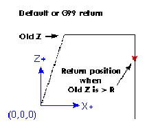
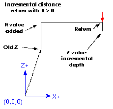

G98 - initial level return in canned cycles
G99 - R value return in canned cycles
These codes are treated together because they behave very much alike. You will recall that when Z is above R the preparatory move is from the current location to the X, Y values. If G98 is not specified, then the canned cycle will return to the R value rather than the Z value that was used on the approach.
|
N01 G0 X1 Y2 Z3
N02 G90 G81 X4 Y5 Z-0.6 R1.8 Adding G98 to the second line above means that the return move will be to the value of OLD_Z since it is higher that the R value specified.
|
|

|
Neither code will have any affect when incremental moves with a positive R value are specified because the R value is added to OLD_Z and that result is used as the initial level for a G98. The same value is the computed R value so G99 will also return to the same place.
|
When the value of R is less than OLD_Z and incremental
distance mode is turned on, G98 will return the tool to the value
of OLD_Z. Under those conditions G99 will retract the tool to OLD_Z
plus the negative R value. The return will be below OLD_Z.
|
|

|